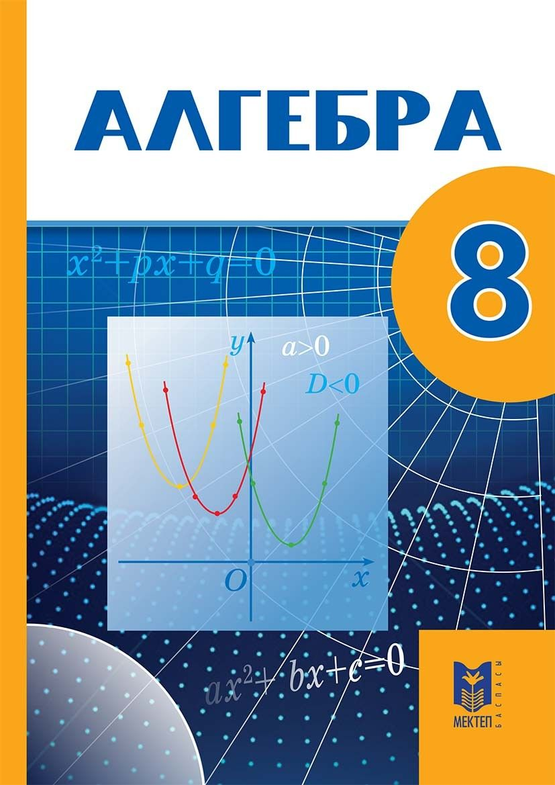
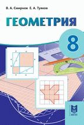
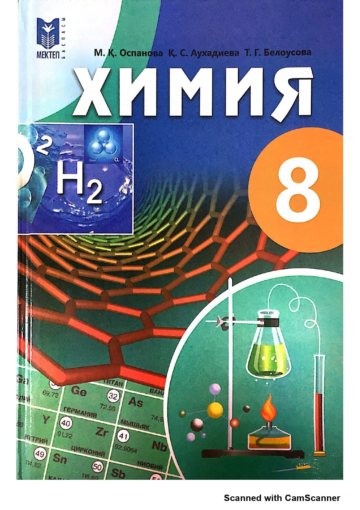
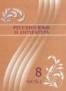
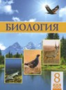

Раздел математики, который можно нестрого охарактеризовать как обобщение и расширение арифметики; в этом разделе числа и другие математические объекты обозначаются буквами и другими символами, что позволяет записывать и исследовать их свойства в самом общем виде. Слово «алгебра» также употребляется в общей алгебре в названиях различных алгебраических систем. В более широком смысле под алгеброй понимают раздел математики, посвящённый изучению операций над элементами множеств произвольной природы, обобщающий обычные операции сложения и умножения чисел.

Раздел математики, изучающий пространственные структуры и отношения, а также их обобщения. Геометрия как систематическая наука появилась в Древней Греции, её аксиоматические построения описаны в «Началах» Евклида.

Химия – это наука о веществах, их свойствах и превращениях. Вещество в широком понятии – это любой вид материи, который обладает собственной массой.

Язык восточнославянской группы славянской ветви индоевропейской языковой семьи, национальный язык русского народа. Является одним из наиболее распространённых языков мира - шестым среди всех языков мира по общей численности говорящих и восьмым по численности владеющих им как родным. Русский является также самым распространённым славянским языком и самым распространённым языком в Европе - географически и по числу носителей языка как родного.

Наука о живых существах и их взаимодействии со средой обитания. Изучает все аспекты жизни, в частности: структуру, функционирование, рост, происхождение, эволюцию и распределение живых организмов на Земле. Классифицирует и описывает живые существа, происхождение их видов, взаимодействие между собой и с окружающей средой.

Язык казахов, один из тюркских языков. Государственный язык Республики Казахстан. Распространён также среди этнических казахов в России, Узбекистане, Туркменистане и Монголии и т.д. Наиболее близкие языки - каракалпакский, ногайский и карагашский, вместе с которыми образует кыпчакско-ногайскую подгруппу в рамках кыпчакской языковой группы.